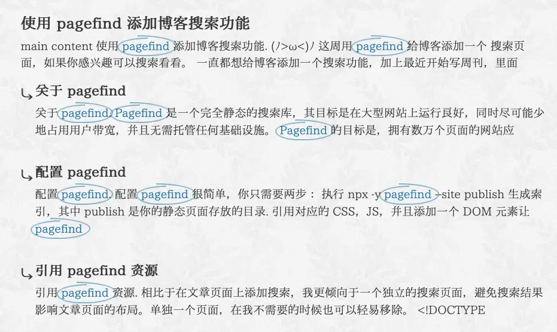

使用 pagefind 添加博客搜索功能
(ﾉ>ω<)ﾉ
这周用 pagefind 给博客添加一个 搜索页面，如果你感兴趣可以搜索看看。
一直都想给博客添加一个搜索功能，加上最近开始写周刊，里面整理了不少的链接，有时候我想找点东西，能够搜索的话就会方便很多。
以前尝试过 algolia ，但配置起来有点麻烦，也显得很重，效果并不满意。
这周看到了一个开源项目 pagefind，它可以对构建好的 HTML 进行索引和搜索，配置简单，开箱即用，没有额外的第三方服务，很符合我的需要。
关于 pagefind
Pagefind 是一个完全 静态 的搜索库，其目标是在大型网站上运行良好，同时 尽可能少地占用用户带宽 ，并且无需托管任何基础设施。
pagefind 的一些特点：
- 零配置支持多语言网站
- 使用 NodeJS 索引库索引任何内容（例如 PDF、JSON 文件或字幕）
- 以相同的低带宽占用提供所有功能
对我来说，它最大的优点就是配置简单，不依赖第三方服务，而且搜索效果也不错。
配置 pagefind
配置 pagefind 很简单，你只需要两步：
- 执行
npx -y pagefind --site publish生成索引，其中publish是你的静态页面存放的目录 - 引用对应的 CSS，JS，并且添加一个 DOM 元素让 pagefind 挂载
<link href="/pagefind/pagefind-ui.css" rel="stylesheet"> <script src="/pagefind/pagefind-ui.js"></script> <div id="search"></div> <script> window.addEventListener('DOMContentLoaded', (event) => { new PagefindUI({ element: "#search", showSubResults: true }); }); </script>
这样你就拥有搜索功能了 ヾ(´∀ ˋ)ﾉ
下面分享一下我是如何集成的。
CI/CD 中添加索引指令
我的博客1是部署在 Netlify，我只需要在构建的最后，添加 一行执行索引的指令 就完成索引了。
#!/bin/bash # Enable command printing (debug mode) set -x # Only build when `publish` change git diff --quiet $CACHED_COMMIT_REF $COMMIT_REF publish # index.xml is for https://www.v2ex.com/xna cp -f publish/rss.xml publish/index.xml npx -y pagefind --site publish --force-language zh-CN # Disable debug mode set +x
如果你仔细看的话，会发现我的指令添加了 --force-language zh-CN 的 option，这会告诉 pagefind 要将不同语言的页面都生成到同一个索引里。
pagefind 的默认逻辑是按照语言各自建立索引，当你的页面的 lang 是 en 的时候，它只会检索 en 页面对应的索引，而不会检索 zh-CN 页面的索引。
但是我希望在一个统一的地方，能够搜索到我博客所有的内容，因此我需要它将不同语言的页面索引放到一起。
引用 pagefind 资源
相比于在文章页面上添加搜索，我更倾向于一个独立的搜索页面，避免搜索结果影响文章页面的布局。单独一个页面，在我不需要的时候也可以轻易移除。
<!DOCTYPE html> <html lang="zh-CN"> <head> <!-- ... --> <link href="/pagefind/pagefind-ui.css" rel="stylesheet"> <script src="/pagefind/pagefind-ui.js"></script> </head> <body> <div id="search"></div> <script> window.addEventListener('DOMContentLoaded', (event) => { new PagefindUI({ element: "#search", showSubResults: true, showImages: false, autofocus: true, excerptLength: 50, }); }); </script> </body> </html>
页面上我设置了 lang="zh-CN" ，pagefind 会基于 lang 去匹配索引和组件的多语言文字。之前我的页面都是 lang="en" ，pagefind 将页面按照 en 索引，导致我搜索不到任何内容。因此我也更新了博客页面的 lang 属性，从 en 改为了 zh-CN，这样 对于使用屏幕阅读器的人也会友好一点。
showImages 我设置成了 false，因为我的博客文章基本没有封面图，图片还会增加搜索时的带宽消耗。
excerptLength 可以考虑设置一个大一点值，这样关键字附近的上下文会多一些。
页面完整代码你可以查看 搜索页面 的源码。
自定义样式
调整 excerpt 的样式
参考 Vanilla CSS is all you need，可以给 <mark> 添加一个样式，看起来像是用记号笔圈起来一样。
{kind=link}

首先，新增一个 <span> 用于承载样式，可以通过 processResult 将 excerpt 返回的 <mark> 替换成 <mark><span></span> 。虽然只用一个 <mark> 也可以实现类似样式，但 border 连接的地方混色会有问题。
new PagefindUI({ element: "#search", showSubResults: true, showImages: false, autofocus: true, excerptLength: 50, processResult: function (result) { result.excerpt = result.excerpt.replaceAll("<mark>", "<mark><span></span>") result?.sub_results.forEach((sr) => { sr.excerpt = sr.excerpt.replaceAll("<mark>", "<mark><span></span>") }) return result; } });
然后将下面的样式按需要调整一下，集成到你的样式代码里：
样式
@layer components { .circled-text { --circled-color: oklch(var(--lch-blue-dark)); --circled-padding: -0.5ch; background: none; color: var(--circled-color); position: relative; white-space: nowrap; span { opacity: 0.5; mix-blend-mode: multiply; @media (prefers-color-scheme: dark) { mix-blend-mode: screen; } } span::before, span::after { border: 2px solid var(--circled-color); content: ""; inset: var(--circled-padding); position: absolute; } span::before { border-inline-end: none; border-radius: 100% 0 0 75% / 50% 0 0 50%; inset-block-start: calc(var(--circled-padding) / 2); inset-inline-end: 50%; } span::after { border-inline-start: none; border-radius: 0 100% 75% 0 / 0 50% 50% 0; inset-inline-start: 30%; } } }
一些建议
写在最后
如果你还有更好的搜索服务，欢迎分享 (ﾟ∀。)
感谢 pagefind 提供这样简单好用的搜索服务！如果你也有搜索静态页面的需要，试试看吧！
脚注:
如果你对我的博客是如何搭建感兴趣，可以看: